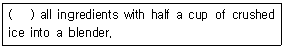
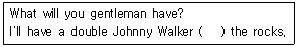

조주기능사 (2004-02-01 기출문제)
1과목: 주류학개론
1. 쇼트 드링크(short drink)란?
- 만드는 시간이 짧은 음료
- 증류주와 청량음료를 믹스한 음료
- 시간적인 개념으로 짧은 시간에 마시는 칵테일 음료
- 증류주와 맥주를 믹스한 음료
(정답률: 91%)

2. 콜라를 바르게 설명한 것은?
- 콜라는 설탕물에 색소를 가미한 것이다.
- 탄산수에 검은향 색소를 가미한 것이다.
- 콜라콩을 가공 처리한 것이다.
- 커피콩을 가공 처리하여 탄산수를 혼합한 것이다.
(정답률: 37%)
3. 위스키(Whisky)만드는 과정이 맞게 배열된 것은?
- Mashing - Fermentation - Distillation - Aging
- Fermentation - Mashing - Distillation - Aging
- Aging - Fermentation - Distillation - Mashing
- Distillation - Fermentation - Mashing - Aging
(정답률: 67%)
4. 쉐리와인(Sherry wine)의 원산지는?
- Bordeaux지방
- Xeres지방
- Rhine지방
- Hockheim지방
(정답률: 58%)
5. 다음 중 리큐르를 만드는 방법이 아닌 것은?
- 침출법
- 여과법
- 엣센스법
- 증류법
(정답률: 38%)
6. 식욕촉진제로 마시는 Cocktail로서 Dry한 칵테일에 사용하는 Garnish는?
- Cherry
- Orange
- Olive
- Pineapple
(정답률: 72%)
7. 롱 드링크(long drinks)칵테일은 어느 것인가?
- Sweet Vermouth
- Gin Fizz
- Manhattan
- Old Fashion
(정답률: 75%)
8. 심플시럽(Simple Syrup)을 만드는 데 필요한 것은?
- Lemon
- Butter
- Cinnamon
- Sugar
(정답률: 87%)
9. 다음 술 중 주재료가 틀린 술 한 가지는?
- Grand Marnier
- Campari
- Triple Sec b
- Cointreau
(정답률: 57%)
10. Blue Bird라는 칵테일은 어떤 종류의 Glass를 사용 하는가?
- Tumbler Glass
- Sour Glass
- Old Fashion Glass
- Cocktail Glass
(정답률: 54%)
11. Mixing Glass를 사용하지 않는 것은?
- Martini
- Gin Fizz
- Gibson
- Alaska
(정답률: 59%)
12. 다음 중 주정도와 관련이 적은 것은?
- Over proof
- Under proof
- American proof
- ℃
(정답률: 57%)
13. 일반적인 Lager Beer의 알코올 도수로 가장 적당한 것은?
- 1도
- 4도
- 9도
- 16도
(정답률: 68%)
14. 슬로우 진(Sloe Gin)의 설명 중 옳은 것은?
- 리큐르의 일종이며 진(Gin)의 종류이다.
- 오얏나무 열매성분을 진(Gin)에 첨가한 것이다.
- 보드카(Vodka)에 그레나딘 시럽을 첨가한 것이다.
- 아주 천천히 분위기 있게 먹는 칵테일이다.
(정답률: 67%)
15. 생강을 주원료로 만든 음료수는?
- 진저엘
- 토닉워터
- 소다수
- 파워에이드
(정답률: 83%)
16. 와인으로 만드는 칵테일은?
- Rob Roy
- Zombie
- Bronx
- Spritzer
(정답률: 40%)
17. 계란이 들어가는 칵테일에 주로 뿌려 주는 부재료는?
- Nutmeg Powder
- Lemon Powder
- Cinnamon Powder
- Chocolate Powder
(정답률: 71%)
18. 맥주(Beer)에는 특이한 쓴맛과 향기로 보존성을 증가시키고 또한 맥아즙의 단백질을 제거하는 역할을 하는 원료는 무엇인가?
- 효모(Yeast)
- 홉(Hop)
- 알콜(Alcohol)
- 과당(Fructose)
(정답률: 78%)
19. 우리나라 고유의 술은 곡물과 누룩도 좋아야 하지만 특히 물이 좋아야 한다. 옛 부터 만물이 잠든 자정에 모든 오물이 다 가라앉는 맑고 깨끗한 물을 길러 술을 담갔다 고 한다. 여기서 말하는 물을 뜻하는 것은?
- 우물물
- 탄산수
- 계곡물
- 정화수
(정답률: 74%)
20. 다음 칵테일 중 여러 가지 아름다운 색깔을 시각과 맛으로 음미할 수 있는 것은?
- 블랙러시안
- 레인보우
- 마티니
- 다이커리
(정답률: 88%)
21. 다음 중 양조주에 해당하지 않는 것은?
- 백포도주
- 적포도주
- 쉐리와인
- 브랜디
(정답률: 70%)
22. 진(Gin)은 처음 어느 나라에서 만들어졌는가?
- 프랑스
- 네덜란드
- 영국
- 덴마크
(정답률: 65%)
23. 다음 중 테킬라의 주원료는?
- 아가베
- 포도
- 옥수수
- 호밀
(정답률: 70%)
24. 진토닉(Gin &Tonic)칵테일에 잘 어울리는 장식법은?
- 파인애플 슬라이스(pineapple slice)
- 올리브(olive)
- 오렌지 슬라이스(orange slice)
- 레몬 슬라이스(lemon slice)
(정답률: 63%)
25. 칵테일 제공시 잔의 밑받침대로 헝겊이나 두터운 종이로 만든 것으로 잔이 미끄러지지 않게 하고, 술이 테이블에 흘러내리지 않도록 하기 위하여 사용하는 것은?
- Muddler
- Pourer
- Stopper
- Coaster
(정답률: 83%)
26. 다음 중 성격이 다른 하나는?
- Cherry Brandy
- Peach Brandy
- Hennessy Brandy
- Apricot Brandy
(정답률: 70%)
27. 엄격한 법도에 의해 술을 담근다는 전통주로 신라시대부터 전해오는 유상곡수(流觴曲水)라 하여 주로 상류계급에서 즐기던 것으로 중국남방 술인 소흥주보다 빛깔은 좀 희고 그 순수한 맛과 도수가 가히 일품인 우리나라 고유 의 술은?
- 두견주
- 인삼주
- 감홍로주
- 경주법주
(정답률: 70%)
28. 칵테일은 차게 해서 조주되어야 한다. 만들어진 칵테일이 손에서 체온이 전달되지 않도록 사용되어야 할 글라스(glass)는?
- Stemmed glass
- Tumbler
- Highball glass
- Collins
(정답률: 73%)
29. 효율적인 주장 관리에서 FIFO원칙에 적용되어야 할 Beverage는?
- Brandy
- Whisky
- Beer
- Tequila
(정답률: 84%)
30. 다음 중 Brandy의 숙성 년도가 가장 오래된 것은?
- V. S. O. P
- Napoleon
- Extra Old
- 3 star
(정답률: 59%)
2과목: 주장관리개론
31. Blender를 사용하는 것은?
- High Ball
- Frozen Drink
- Martini
- Manhattan
(정답률: 48%)
32. 칵테일을 컵에 따를 때 얼음이 들어가지 않도록 걸러 주는 기구는?
- Shaker
- Strainer
- Stick
- Blender
(정답률: 74%)
33. 바 지배인(Bar Manager)의 주 임무가 아닌 것은?
- 바(Bar)접객원의 업무감독 및 지휘
- 모든 술종류의 청구 및 보충저장 지시
- 술병조사와 빈병 파기에 대한 지시
- 모든 주류 및 칵테일의 조주봉사
(정답률: 71%)
34. 와인 스트워드(wine steward)의 주된 임무는?
- 와인 구매
- 와인 저장
- 와인 판매
- 와인 검수
(정답률: 38%)
35. 주장 시설시 가장 중요하게 우선적으로 감안되어야 할 사항은?
- 목표 고객의 선정
- 서비스 계획
- 업장내의 장식
- 종사원의 유니폼
(정답률: 46%)
36. 다음 중 맥주의 냉각 저장에 가장 적합한 기물은?
- Deep freezer
- Bar sink
- Refrigerator
- Ice cube bin
(정답률: 41%)
37. 파 스톡(par stock)이란?
- 일일적정 요구량
- 일일적정 사용량
- 일일적정 재고량
- 일일적정 보급량
(정답률: 80%)
38. 칵테일 파티를 준비하는 요소로서 적합하지 못한 사항은?
- 초대인원 파악
- 개최일시와 장소
- 파티의 매너
- 메뉴의 결정
(정답률: 54%)
39. 서비스 할 칵테일 글라스(Glass)는 어떻게 보관하는가?
- 칵테일 글라스는 냉장고에 차갑게 보관한다.
- Bar Station에 White Cloth를 깔고 모든 Glass를 종류별로 Setting 한다.
- 먼지가 많이 일어나는 곳에 보관한다.
- Back Side 아무 곳에나 보관해 둔다.
(정답률: 32%)
40. 위생적인 주류 취급 중 맞지 않은 것은?
- 먼지가 많은 양주는 깨끗이 닦아 Setting 한다.
- 와인은 세워서 보관하고 먼지는 항상 깨끗이 닦아 준다.
- 사용한 주류는 항상 뚜껑을 닫아 둔다.
- 창고에 보관할 때는 Bin Card를 작성한다.
(정답률: 90%)
41. 와인(Wine)을 오픈(Open)할 때 사용하는 기물로 적당한 것은?
- Cork Screw
- White Napkin
- Ice Tong
- Wine Basket
(정답률: 82%)
42. 칵테일에 사용하는 얼음 중 맞지 않는 것은?
- Color Ice
- Shaved Ice
- Cube Ice
- Cracked Ice
(정답률: 81%)
43. 와인(Wine)을 바르게 설명한 것은?
- 포도의 당분에 효모를 첨가하여 발효시킨 것이다.
- 보리를 발효, 여과해서 만든 것이다.
- 호밀을 증류해서 만든 술이다.
- 곡식을 양조, 증류해서 만든 술이다.
(정답률: 92%)
44. 흔들기(Shaking)에 대한 설명 중 틀린 것은?
- 잘 섞이지 않고 비중이 다른 음료를 조주할 때 적합하다.
- 롱 드링크(long Drink)조주에 주로 사용한다.
- 칵테일류를 조주할 때 많이 이용된다.
- 쉐이커를 이용한다.
(정답률: 69%)
45. 머들러(Muddler)의 용도는?
- 정확한 술의 양을 측정하는데 사용한다.
- 술을 섞은 후 거르는데 사용한다.
- Long Drink Cocktail을 섞는데 사용한다.
- Cocktail을 만든 후 장식하는데 사용한다.
(정답률: 68%)
46. 바 웨이터(Bar waiter)의 역할이 아닌 것은?
- 음료의 주문 그리고 서비스를 담당한다.
- 영업시간 전에 필요한 사항을 준비한다.
- 고객을 위해서 테이블을 재정비한다.
- 칵테일(Cocktail)을 직접 조주한다.
(정답률: 85%)
47. 발효주의 보관 ·저장에 관한 설명 중 틀린 것은?
- 막걸리 보관에는 적정온도가 유지되어야 한다.
- 맥주는 강렬한 햇빛을 피한다.
- 와인은 코르크(Cork)가 젖어 있어야 한다.
- 소주는 장기간 보관하여도 무방하다.
(정답률: 79%)
48. 에페리티프 와인(Aperitif Wine)취급과 특징에 대한 설명 중 맞지 않는 것은?
- 식후주의 의미를 가지고 있다.
- 드라이 버머스(Dry Vermouth)가 좋다.
- 산뜻한 맛과 시큼한 향취가 유지되어야 한다.
- 식전주의 의미를 가지고 있다.
(정답률: 71%)
49. 얼음을 다루는 기계 중 설명이 틀린 것은?
- Ice Pick -얼음을 깰 때 사용하는 기구
- Ice Scooper -얼음을 떠내는 기구
- Ice Crusher -얼음을 가는 기구
- Ice Tong -얼음을 보관하는 기구
(정답률: 57%)
50. 칵테일 부재료 중 스파이스(Spice)류에 해당되지 않는 것은?
- Grenadine syrup
- Mint
- Nutmeg
- Cinnamon
(정답률: 66%)
3과목: 고객서비스영어
51. What is the negative characteristic in taste and finish of wine?
- flat
- full-bodied
- elegant
- pleasant
(정답률: 36%)
52. What does "V.S.O.P." on a bottle of Brandy mean?(오류 신고가 접수된 문제입니다. 반드시 정답과 해설을 확인하시기 바랍니다.)
- Very Special Old Pail
- Very Special Old Pale
- Very Extra Napoleon
- Very Special Old
(정답률: 72%)
53. The waitress goes to get champagne for Christie and Paul. She returns, ( 괄호 ) the champagne and asks ( 괄호 ) they are ready to order dinner.
- picks, when
- pull, if
- pours, when
- pours, if
(정답률: 17%)
54. "As Wine ages, Its original aroma changes with maturity" 에 해당하는 뜻은 다음 중 어느 것인가?
- Growth
- Brilliant
- Bouquet
- Delicate
(정답률: 49%)
55. 다음 ( )안에 가장 적당한 단어는?

- Doing
- Put
- Keeps
- Makes
(정답률: 34%)
56. "나는 술이 싫다." 의 올바른 표현은?
- I don't like a liquor.
- I don't like the liquor.
- I don't like liquors.
- I don't like liquor.
(정답률: 49%)
57. Which do you like better whisky ______ brandy?
- as
- but
- and
- or
(정답률: 70%)
58. 「저하고 오늘밤에 한잔 하시겠어요?」에 적당한 표현은?
- Let's drink wine with me tonight.
- What are you having this evening?
- Why don't you drink a cup of wine with me tonight?
- How about a drink with me this evening?
(정답률: 37%)
59. 다음 문장에서 ( )에 들어갈 단어는?

- above
- on
- over
- in
(정답률: 87%)
60. What is the meaning of port wine?
- Port wine is Italian red wine
- Port wine is Portugal wine
- Port wine is a Chille wine
- None of the above
(정답률: 54%)